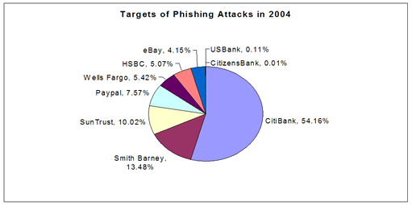

The Honeynet
Project & Research Alliance
http://www.honeynet.org
Last Modified: 9th May 2005
This side note provides further detailed background on phishing attacks, beginning with a historic overview of phishing and social engineering, and concluding with quantitative data on phishing attempts and information on high level trends.
During the 1990’s, as the popularity and take up of the Internet grew, social engineering was gradually transformed and attackers began to focus on the mass consumer market. Phishers moved from AOL to the unregulated and more anonymous Internet, with email becoming the preferred medium for engaging (often naïve) end users. One reason for this change of focus might be that online discussion forums, IRC and instant messaging were increasingly portrayed by the press as dangerous places, where evildoers and system crackers waited to ambush unsuspecting users. Also, users had become aware that legitimate companies nearly exclusively use telephone, email and traditional postal mail as means of communication with their customers, rarely participating in less formal chat sessions. Users had also become more familiar with and confident in trusting web based authentication systems, e-shopping with credit cards, online banking services and the protection offered by technologies such as Secure Sockets Layer (SSL) - all fronted by a myriad of different looking user interfaces.
Internet based email solutions continued to evolve at a rapid rate, with increasingly complex methods being offered to customise the look and feel of email messages and therefore potentially fooling unsuspecting users into trusting spoofed communications that might appear to be legitimate. When compared to established and relatively well policed closed loop systems, it still remains difficult for consumers to trace the exact origin of an SMTP mail message, and the available global user base of Internet email is many times larger. Even activities with a very low success rate can still be attractive to an attacker if the number of end users receiving the message is large enough to generate a number of responses, as can be witnessed by the continued growth in organisations willing to pay for the sending of spam and many users' own experiences of inboxes regularly full of unsolicited email.
In a more sinister turn, phishers have not only changed their primary means of communication to email, they have also started operating in a more organised manner and to target their attacks against more profitable information. In recent years, requests for AOL accounts or single credit card numbers have gradually been replaced with schemes aimed at obtaining more sensitive data, such as personal information that could allow unlimited access to online banking services or that could serve as a foundation to enable identity theft. Sensitive information to fraudulently impersonate another person’s identity might include name, date of birth, address, social security number or "secret" information such as mother's maiden name, account numbers, first school, pet’s name, user names, passwords, Personal Identification Numbers (PINs) or even one-time passwords (which are quite common in European Internet banking).
The following chart that shows the top corporate phishing targets based on responses in a recent survey of spam recipients (October 2004) by email security company CipherTrust:

Phishing attacks have affected many users and have caused serious problems for some major banks. In extreme cases, some banks have been forced to shut down their ebanking operations for period of time due to phishing attacks. The exact cost to the banking industry of phishing attacks is not available in the public domain, and there are few well documented qualitative examples of public arrests and prosecution (such as in Estonia or Brazil), but it is likely to be substantial. In most cases banks will refund the money lost by their customers due to phishing attacks, although they reserve the right not to refund such losses at their discretion. Estimates by the Association for Payment Clearing Services (APACS) for the cost of phishing attacks against UK banks were £1M for the previous 18 months to April 2004, rising to £12M by March 2005. Australian estimates for March 2005 were A$25M, whilst Financial Insights estimates the cost to US business to be $400M in 2004. A study by Gartner estimated the cost in 2003 to be $1.2B and the number of reported phishing attacks have massively increased since then.
In October 2004 the Anti-Phishing Working Group reported that it had seen 6597 new phishing emails, an increase of 36% on the previous month. 1142 phishing web sites were reported, double the number for September and part of a "bumper month" during a period of huge growth in automated phishing attacks. Email filtering specialist MessageLabs reported that it intercepted more than 18 million phishing messages during 2004, and the graph below clearly shows the growth in attempted phishing attacks by email:
The loss of trust, impact on consumer confidence and the associated financial costs of phishing attacks have become important enough for banks to set up web sites such as BankSafe Online to try and educate their customers, and most target brands now provide sections of their official web site with advice on identifying and avoiding online scams (such as Citizen Bank's "Online Fraud Prevention Centre" or Citibank's "Learn About Spoofs" pages ). Other organisations such as the Anti Phishing Working Group are also hoping to educate consumers as to the potential risks and teach Internet users how to avoid online scams such as phishing attacks. However, the main challenge in preventing phishing attacks is that phishing is not a pure technology problem - the major contributing factor is human nature, and as long as attackers can continue to create schemes to trick unwary users, phishing will continue to be successful and potentially lucrative. As Bruce Schneier writes in a recent weblog, even issuing all end users with two-factor authentication doesn't really help to solve the problem if the phisher is successful in tricking the users into authenticating themselves against a fake, malicious system. Given the combination of human nature, the rapid rate of technological change and the potential for illegitimate profits to be made, it seems safe to assume that the problem of phishing will get worse before it gets better.
Click here to return to the main paper.